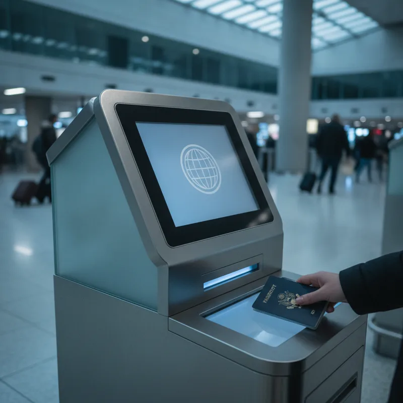
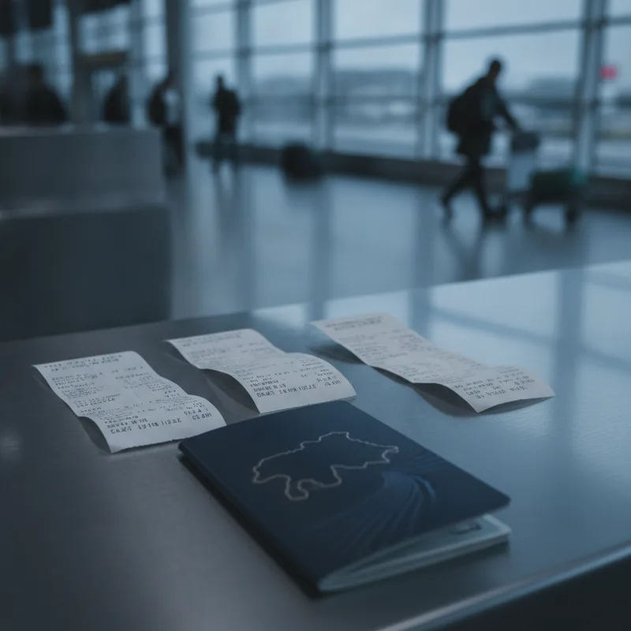

일본 현지 매장에서 면세 영수증을 챙기고 출국 공항으로 향하는 동선이 새로워졌습니다. 2026년 11월 1일부터 일본의 면세 제도가 기존 현장 즉시 할인에서 출국 시 확인 후 세금을 돌려받는 구조로 개편되었기 때문입니다. 이전처럼 상점 결제 시점에 소비세를 바로 깎아주던 방식에 익숙해진 상태로 공항에 도착하면 수속 현장에서 당황하기 쉽습니다.
항공사 카운터에서 짐부터 보냈다가 면세 수속에 차질을 겪는 일도 흔히 발생합니다. 달라진 개편 내용과 출국 당일 공항에서 밟아야 하는 절차를 문답 형식으로 짚어두면 현지에서 한결 여유롭게 움직일 수 있습니다.
가장 큰 변화는 결제 시점과 환급 시점의 분리입니다. 기존에는 면세 매장에서 여권을 보여주면 소비세를 뺀 금액만 결제했으나, 개편된 제도 아래에서는 먼저 소비세가 포함된 전체 금액을 지불해야 합니다.
이후 출국 항구나 공항에 설치된 단말기에서 물품 반출 확인을 거친 뒤에 소비세 상당액을 사후 환급 방식으로 되돌려받게 됩니다. YTN 뉴스 보도에 따르면 일본 정부는 면세품을 구입한 뒤 일본 국내에서 불법으로 되파는 행위를 차단하고 국외 반출 여부를 명확히 확인하기 위해 이 제도를 시행했습니다.
최소 구매 기준액은 이전과 같습니다. 동일한 매장에서 같은 날 동일 매장에서 같은 날 세전 5,000엔 이상 구매해야 면세 적용 대상이 됩니다. NAVITIME 일본 여행 가이드에 따르면 이 기준액 조건은 신제도에서도 변함없이 유지됩니다.
반면 쇼핑 과정의 편의성은 일부 개선되었습니다. 그동안 복잡하게 나뉘어 있던 일반 물품과 소모품의 구분이 완전 폐지되었습니다. 이에 따라 소모품 구매 시 적용되던 50만 엔 구매 상한액이 사라졌고, 소모품을 묶어 포장하던 개봉 방지용 특수 비닐 포장 의무도 함께 사라졌습니다. 일본 여행 면세 기준을 사전에 체크할 때 이 구분 폐지점을 미리 알아두시면 계산대에서 품목을 따로 나눌 필요가 없습니다.
매장에서 결제할 때 여권을 제시하는 절차는 기존과 동일합니다. 다만 결제가 완료된 후 받은 영수증 처리에 주의해야 합니다.
MATCHA 여행 정보를 보면 구매 후 영수증에 인쇄된 QR코드를 휴대폰으로 스캔하여 미리 환급 신청을 진행하거나, 종이 영수증을 버리지 말고 보관하여 공항 수속 시 활용해야 합니다. 결제 단계에서 영수증을 구겨서 버리면 공항에서 일본 여행 면세 방법을 이행할 때 지체가 생기기 쉽습니다.

공항에 도착했을 때 가장 주의해야 하는 구간입니다. 면세 환급 수속은 반드시 항공사 카운터에 위탁수하물을 맡기기 전에 완료해야 합니다.
부피가 큰 구매 품목을 캐리어 안에 넣고 항공사 수하물로 먼저 보내버리면 세관 검사가 걸렸을 때 물품 확인이 불가능해집니다. 공항 전용 단말기에서 여권을 스캔하여 승인을 받기 전까지는 면세품이 담긴 가방을 수하물로 위탁하면 안 됩니다. 공항 도착 직후 동선 구성과 환급 수속 흐름은 일본 면세 제도 변경 11월부터 리펀드 방식으로 전환, 공항 환급 절차 총정리 글에서도 상세히 다루고 있으니 참고하실 수 있습니다.
공항 출국장에 설치된 면세 수속 단말기에 여권을 대면 화면에 그린 판정과 레드 판정 중 하나가 표시됩니다.
그린 판정이 나오면 정상적으로 반출 확인이 완료된 것이므로 지정된 수하물 위탁 카운터로 이동하여 짐을 맡기면 됩니다. 반면 레드 판정이 뜨는 경우에는 구매한 물품을 들고 세관 검사장으로 직접 이동해야 합니다. 세관 담당 직원에게 구매한 실제 물품을 보여주고 국외 반출 확인을 받아야 환급 절차가 정상 마무리됩니다. 물품이 없거나 확인이 불가능하면 환급 대상에서 제외되므로 레드 판정에 대비해 구매 품목은 가급적 찾기 쉬운 가방 상단에 담아두는 편이 안전합니다.
환급 수령 채널은 한 가지로 제한되지 않습니다. 구매한 매장에서 직접 수령 절차를 진행하거나 지정된 환급 사업자를 통해 다양한 채널로 처리됩니다.
대표적으로 신용카드 취소 환급, 은행 계좌이체, 간편결제 앱 송금 방식이 이용됩니다. 공항 현장에서 바로 지급받고 싶은 출국자를 위해 항구 및 공항 내 현금 환급 창구나 현금 환급 키오스크도 운용됩니다. 환급 수단에 따라 처리 완료까지 소요되는 기간에 차이가 있을 수 있으므로 공항 내 키오스크나 본인 카드사 안내를 함께 점검하는 것이 좋습니다.

면세품을 구입한 날의 다음 날을 기준으로 90일 이내에 일본을 출국해야 환급을 신청할 수 있습니다. 일본 여행 면세 한도 항목을 따로 체크하시는 분들도 이 출국 기한 조건을 놓치지 않아야 합니다.
| 슬롯 | 위치 | 기준 블록 | 근거 |
|---|---|---|---|
🖼 이미지 1 news-20261106-eglj-01-intro.webp | 문단 1 뒤 | P · 일본 현지 매장에서 면세 영수증을 챙기고 출국 공항으로 향하는 동선이 새 | 도입부 첫 문단 뒤(히어로) |
| 📢 광고 1 | 문단 9 앞 | H3 · Q. 매장에서 물건을 살 때 챙겨야 할 서류나 절차가 따로 있나요? | H2 앞 · 직전 광고와 — 간격 |
🖼 이미지 2 news-20261106-eglj-02-middle.webp | 문단 12 앞 | H3 · Q. 공항에서 면세 환급 수속은 정확히 어느 단계에서 해야 하나요? | 글자수 기준 중간에 가장 가까운 소제목 앞 |
🖼 이미지 3 news-20261106-eglj-03-end.webp | 문단 22 앞 | P · 면세품을 구입한 날의 다음 날을 기준으로 90일 이내에 일본을 출국해야 | 마지막 문단 앞(마무리) |